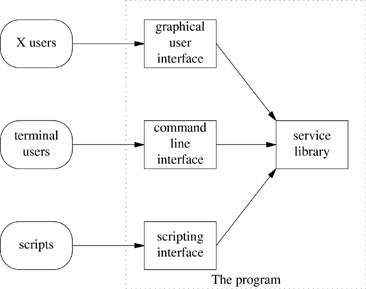

| [ Team LiB ] |
|
11.7 Applying Unix Interface-Design PatternsTo facilitate scripting and pipelining (see Chapter 7) it is wise to choose the simplest interface pattern possible—that is, the pattern with the fewest channels to the environment and the least interactivity. In many of the single-component patterns described above, it is emphasized that the pattern does not require user interaction after startup time. When the 'user' is often expected to be another program (and thus to lack the range and flexibility of a human brain) this is a very valuable feature, maximizing scriptability. We've seen that different interface design patterns optimize for traits valuable in differing circumstances. In particular, there is a strong and inherent tension between the GUIs and design patterns appropriate for novice and nontechnical end-users (on the one hand) and those which serve expert users and maximize scriptability (on the other). One way around this dilemma is to make programs with modes that exhibit more than one pattern. An excellent example is the Web browser lynx(1). It normally has a roguelike interface for interactive use, but can be called with a -dump option that makes it into a source, formatting a specified Web page to text dumped on standard output. Such dual-mode interfaces, however, are not normally attempted when the program has to have a true GUI. The reasons for this are partly historical, but mostly have to do with controlling global complexity. GUIs tend to require complex startup configurations and large volumes of specialized code; these features coexist uneasily with the simpler patterns. In the worst case, a dual-mode GUI/non-GUI program could require two separate command-interpreter loops, with all that implies in the way of code bloat and potential inconsistencies. Thus, when "choose the simplest pattern" conflicts with a requirement to produce a GUI, the Unix way is to split the program in two, applying the 'separated engine and interface' design pattern. In fact, by combining a theme from Chapter 7 with this idea, we can perhaps name a new design pattern emerging under Linux and other modern, open-source Unixes where GUIs are not merely a reluctant add-on but an active focus of lots of development effort. 11.7.1 The Polyvalent-Program PatternA polyvalent program has the following traits:
Figure 11.4. Caller/callee relationships in a polyvalent program. Notably, the GIMP actually fulfills this pattern. |
| [ Team LiB ] |
|